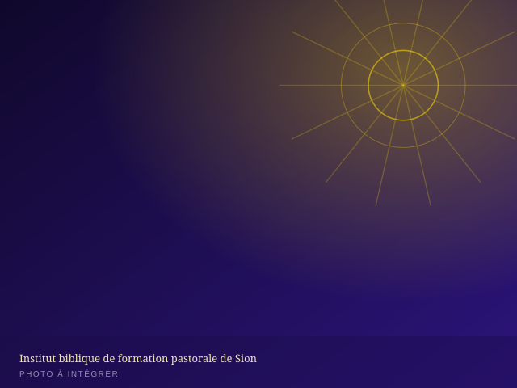

Institut biblique de formation pastorale de Sion
Former des serviteurs enracinés dans la Parole, équipés pour conduire, enseigner et restaurer. Ouvert aux leaders de la MIERR, aux futurs pasteurs et à toute personne — membre ou non — désireuse d'approfondir sa connaissance biblique.
Une école de vie et de service
L'Institut biblique de formation pastorale de Sion est l'organe de formation théologique et pastorale de la MIERR. Il prépare les croyants à une meilleure connaissance des Écritures et forme les leaders et futurs pasteurs appelés à conduire l'œuvre de Dieu avec intégrité et compétence.
Voir émerger une génération de leaders solides doctrinalement, matures spirituellement et efficaces dans le service.
Dispenser un enseignement biblique rigoureux, accessible et pratique, au service de l'Église locale et de la mission.

Nos formations & niveaux
Un parcours progressif, du fondement biblique à la formation pastorale approfondie.
Cycle Fondation
Les bases de la foi chrétienne et de la connaissance biblique.
- Introduction biblique (Ancien & Nouveau Testament)
- Doctrines fondamentales de la foi
- Vie chrétienne & disciplines spirituelles
Cycle Pastoral
La formation des futurs pasteurs et responsables d'Église.
- Homilétique & art de la prédication
- Théologie systématique
- Éthique pastorale & conduite d'Église
- Stage pratique encadré
Cycle Leadership & Mission
Perfectionnement pour leaders confirmés et responsables de départements.
- Leadership chrétien & gestion d'équipe
- Missiologie & implantation d'Église
- Mémoire de fin de cycle
Aperçu des matières enseignées
| Matière | Cycle | Volume horaire | Objectif |
|---|---|---|---|
| Introduction biblique | Fondation | 40 h | Connaître la structure et le message des Écritures |
| Doctrines fondamentales | Fondation | 36 h | Maîtriser les vérités essentielles de la foi |
| Homilétique | Pastoral | 48 h | Préparer et prêcher un message biblique structuré |
| Théologie systématique | Pastoral | 52 h | Approfondir la cohérence de la doctrine chrétienne |
| Éthique pastorale | Pastoral | 30 h | Conduire l'Église avec intégrité et sagesse |
| Leadership chrétien | Leadership | 34 h | Développer les compétences de direction d'équipe |
| Missiologie | Leadership | 28 h | Comprendre les principes de la mission et de l'implantation |
Qui peut s'inscrire ?
- Être né(e) de nouveau et avoir un témoignage de vie chrétienne cohérent
- Avoir une lettre de recommandation de son église locale ou pasteur
- Être disponible pour suivre l'ensemble du cycle choisi
- Avoir un niveau d'études équivalent au secondaire (des dérogations sont possibles selon le parcours)
- S'acquitter des frais de formation selon les modalités communiquées à l'inscription
Organisation des études
Candidature
Dépôt du dossier d'inscription en ligne, toute l'année.
Entretien
Entretien pastoral avec l'équipe de l'Institut.
Rentrée
Début des cours en septembre — cours en journée et en soirée selon les cycles.
Diplomation
Remise d'une attestation de formation à l'issue de chaque cycle validé.
Inscription en ligne
Complétez ce formulaire pour déposer votre candidature. Notre équipe reviendra vers vous pour la suite du processus (entretien, dossier complet, modalités de paiement).